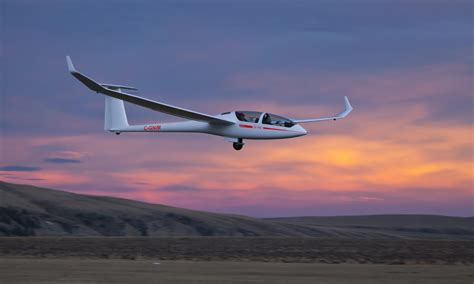

A glider or sailplane is a type of glider aircraft used in the leisure activity and sport of gliding (also called soaring). This unpowered aircraft can use naturally occurring currents of rising air in the atmosphere to gain altitude. Sailplanes are aerodynamically streamlined and so can fly a significant distance forward for a small decrease in altitude. In North America the term 'sailplane' is also used to describe this type of aircraft. In other parts of the English-speaking world, the word 'glider' is more common.
Pilots need some form of control over the glide slope to land the glider. In powered aircraft, this is done by reducing engine thrust. In gliders, other methods are used to either reduce the lift generated by the wing, increase the drag of the entire glider, or both. Glide slope is the distance traveled for each unit of height lost. In a steady wings-level glide with no wind, glide slope is the same as the lift/drag ratio (L/D) of the glider, called "L-over-D". Reducing lift from the wings and/or increasing drag will reduce the L/D allowing the glider to descend at a steeper angle with no increase in airspeed. Simply pointing the nose downwards only converts altitude into a higher airspeed with a minimal initial reduction in total energy. Gliders, because of their long low wings, create a high ground effect which can significantly increase the glide angle and make it difficult to bring the glider to Earth in a short distance.
A slip is performed by crossing the controls (rudder to right with ailerons to left, for example) so that the glider is no longer flying aligned with the air flow. This will present one side of the fuselage to the air-flow significantly increasing drag. Early gliders primarily used slipping for glide slope control.
Spoilers are movable control surfaces in the top of the wing, usually located mid-chord or near the spar which are raised into the air-flow to eliminate (spoil) the lift from the wing area behind the spoiler, disrupting the spanwise distribution of lift and increasing lift-induced drag. Spoilers significantly increase drag.
Air brakes, also known as dive brakes, are devices whose primary purpose is to increase drag. On gliders, the spoilers act as air brakes. They are positioned on top of the wing and below the wing also. When slightly opened the upper brakes will spoil the lift, but when fully opened will present a large surface and so can provide significant drag. Some gliders have terminal velocity dive brakes, which provide enough drag to keep its speed below maximum permitted speed, even if the glider were pointing straight down. This capability is considered a safer way to descend without instruments through cloud than the only alternative which is an intentional spin.
Flaps are movable surfaces on the trailing edge of the wing, inboard of the ailerons. The primary purpose of flaps is to increase the camber of the wing and so increase the maximum lift coefficient and reduce the stall speed. Another feature that some flapped gliders possess is negative flaps that are also able to deflect the trailing edge upward a small amount. This feature is included on some competition gliders in order to reduce the pitching moment acting on the wing and so reduce the downwards force that must be provided by the horizontal stabiliser; this reduces the induced drag acting on the stabilizer. On some types the flaps and ailerons are linked, known a 'flaperons'. Simultaneous movement of these allows a greater rate of roll.
Some high performance gliders from the 1960s and 1970s were designed to carry a small drogue parachute because their air brakes were not particularly effective. This was stored in the tail-cone of the glider during flight. When deployed, a parachute causes a large increase in drag, but has a significant disadvantage over the other methods of controlling the glide slope. This is because a parachute does not allow the pilot to finely adjust the glide slope. Consequently, a pilot may have to jettison the parachute entirely, if the glider is not going to reach the desired landing area.